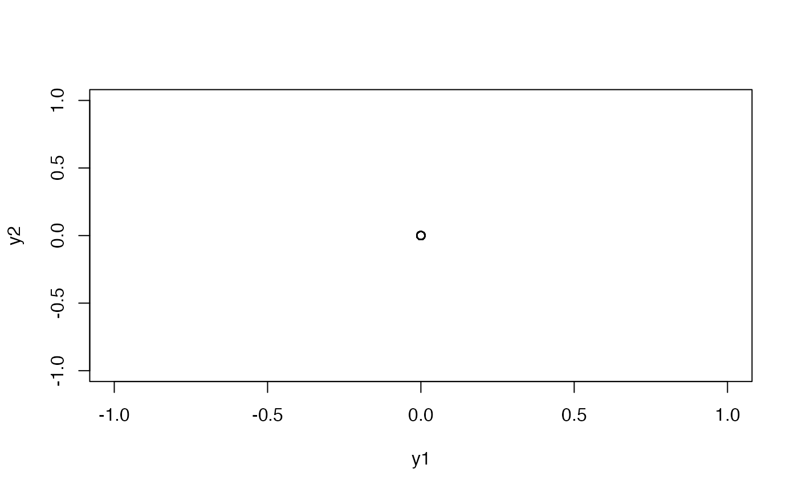

simBmllag.RdThis function simulates increments of bivariate Brownian motions with multi-scale lead-lag relationships introduced in Hayashi and Koike (2018a) by the multi-dimensional circulant embedding method of Chan and Wood (1999).
simBmllag(n, J, rho, theta, delta = 1/2^(J + 1), imaginary = FALSE)
simBmllag.coef(n, J, rho, theta, delta = 1/2^(J + 1))the number of increments to be simulated.
a positive integer to determine the finest time resolution: 2^(-J-1) is regarded as the finest time resolution.
a vector of scale-by-scale correlation coefficients. If length(rho) < J, zeros are appended to make the length equal to J.
a vector of scale-by-scale lead-lag parameters. If length(theta) < J, zeros are appended to make the length equal to J.
the step size of time increments. This must be smaller than or equal to 2^(-J-1).
logical. See `Details'.
Let \(B(t)\) be a bivariate Gaussian process with stationary increments such that its marginal processes are standard Brownian motions and its cross-spectral density is given by Eq.(14) of Hayashi and Koike (2018a). The function simBmllag simulates the increments \(B(i\delta)-B((i-1)\delta)\), \(i=1,\dots,n\). The parameters \(R_j\) and \(theta_j\) in Eq.(14) of Hayashi and Koike (2018a) are specified by rho and theta, while \(\delta\) and \(n\) are specified by delta and n, respecitively.
Simulation is implemented by the multi-dimensional circulant embedding algorithm of Chan and Wood (1999). The last step of this algorithm returns a bivariate complex-valued sequence whose real and imaginary parts are independent and has the same law as \(B(k\delta)-B((k-1)\delta)\), \(k=1,\dots,n\); see Step 3 of Chan and Wood (1999, Section 3.2).
If imaginary = TRUE, the function simBmllag directly returns this bivariate complex-valued sequence, so we obtain two sets of simulated increments of \(B(t)\) by taking its real and complex parts. If imaginary = FALSE (default), the function returns only the real part of this sequence, so we directly obtain simulated increments of \(B(t)\).
The function simBmllag.coef is internally used to compute the sequence of coefficient matrices \(R(k)\Lambda(k)^{1/2}\) in Step 2 of Chan and Wood (1999, Section 3.2). This procedure can be implemented before generating random numbers.
Since this step typically takes the most computational cost, this function is useful to reduce computational time when we conduct a Monte Carlo simulation for \((B(k\delta)-B((k-1)\delta))_{k=1}^n\) with a fixed set of parameters. See `Examples' for how to use this function to simulate \((B(k\delta)-B((k-1)\delta))_{k=1}^n\).
simBmllag returns a n x 2 matrix if imaginary = FALSE (default). Otherwise, simBmllag returns a complex-valued n x 2 matrix.
simBmllag.coef returns a complex-valued \(m\) x 2 x 2 array, where \(m\) is an integer determined by the rule described at the end of Chan and Wood (1999, Section 2.3).
Chan, G. and Wood, A. T. A. (1999). Simulation of stationary Gaussian vector fields, Statistics and Computing, 9, 265–268.
Hayashi, T. and Koike, Y. (2018a). Wavelet-based methods for high-frequency lead-lag analysis, SIAM Journal of Financial Mathematics, 9, 1208–1248.
Hayashi, T. and Koike, Y. (2018b). Multi-scale analysis of lead-lag relationships in high-frequency financial markets. doi:10.48550/arXiv.1708.03992 .
There are typos in the first and second displayed equations in page 1221 of Hayashi and Koike (2018a): The \(j\)-th summands on their right hand sides should be multiplied by \(2^j\).
## Example 1
## Simulation setting of Hayashi and Koike (2018a, Section 4).
n <- 15000
J <- 13
rho <- c(0.3,0.5,0.7,0.5,0.5,0.5,0.5,0.5)
theta <- c(-1,-1, -2, -2, -3, -5, -7, -10)/2^(J + 1)
set.seed(123)
dB <- simBmllag(n, J, rho, theta)
str(dB)
#> num [1:15000, 1:2] -0.0015 0.012 -0.00806 0.00602 0.0077 ...
#> - attr(*, "dimnames")=List of 2
#> ..$ : NULL
#> ..$ : chr [1:2] "y1" "y2"
n/2^(J + 1) # about 0.9155
#> [1] 0.9155273
sum(dB[ ,1]^2) # should be close to n/2^(J + 1)
#> [1] 0.9011072
sum(dB[ ,2]^2) # should be close to n/2^(J + 1)
#> [1] 0.9325251
# Plot the sample path of the process
B <- apply(dB, 2, "diffinv") # construct the sample path
Time <- seq(0, by = 1/2^(J+1), length.out = n) # Time index
plot(zoo(B, Time), main = "Sample path of B(t)")
# Using simBmllag.coef to implement the same simulation
a <- simBmllag.coef(n, J, rho, theta)
m <- dim(a)[1]
set.seed(123)
z1 <- rnorm(m) + 1i * rnorm(m)
z2 <- rnorm(m) + 1i * rnorm(m)
y1 <- a[ ,1,1] * z1 + a[ ,1,2] * z2
y2 <- a[ ,2,1] * z1 + a[ ,2,2] * z2
dW <- mvfft(cbind(y1, y2))[1:n, ]/sqrt(m)
dB2 <- Re(dW)
plot(diff(dB - dB2)) # identically equal to zero

## Example 2
## Simulation Scenario 2 of Hayashi and Koike (2018b, Section 5).
# Simulation of Bm driving the log-price processes
n <- 30000
J <- 14
rho <- c(0.3,0.5,0.7,0.5,0.5,0.5,0.5,0.5)
theta <- c(-1,-1, -2, -2, -3, -5, -7, -10)/2^(J + 1)
dB <- simBmllag(n, J, rho, theta)
# Simulation of Bm driving the volatility processes
R <- -0.5 # leverage parameter
delta <- 1/2^(J+1) # step size of time increments
dW1 <- R * dB[ ,1] + sqrt(1 - R^2) * rnorm(n, sd = sqrt(delta))
dW2 <- R * dB[ ,2] + sqrt(1 - R^2) * rnorm(n, sd = sqrt(delta))
# Simulation of the model by the simulate function
dW <- rbind(dB[,1], dB[,2], dW1, dW2) # increments of the driving Bm
# defining the yuima object
drift <- c(0, 0, "kappa*(eta - x3)", "kappa*(eta - x4)")
diffusion <- diag(4)
diag(diffusion) <- c("sqrt(max(x3,0))", "sqrt(max(x4,0))",
"xi*sqrt(max(x3,0))", "xi*sqrt(max(x4,0))")
xinit <- c(0,0,"rgamma(1, 2*kappa*eta/xi^2,2*kappa/xi^2)",
"rgamma(1, 2*kappa*eta/xi^2,2*kappa/xi^2)")
mod <- setModel(drift = drift, diffusion = diffusion,
xinit = xinit, state.variable = c("x1","x2","x3","x4"))
#> Warning:
#> YUIMA: Solution variable (lhs) not specified. Trying to use state variables.
samp <- setSampling(Terminal = n * delta, n = n)
#> Warning:
#> YUIMA: 'delta' (re)defined.
yuima <- setYuima(model = mod, sampling = samp)
# simulation
result <- simulate(yuima, increment.W = dW,
true.parameter = list(kappa = 5, eta = 0.04, xi = 0.5))
plot(result)